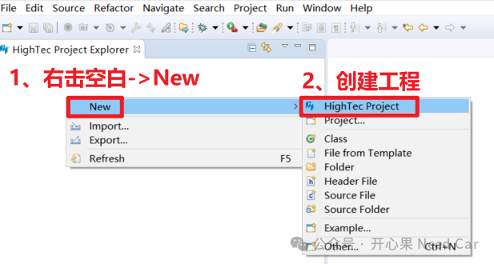
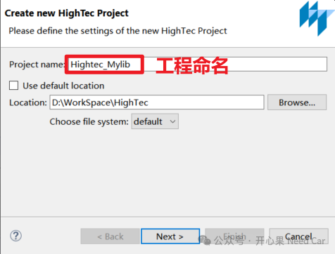
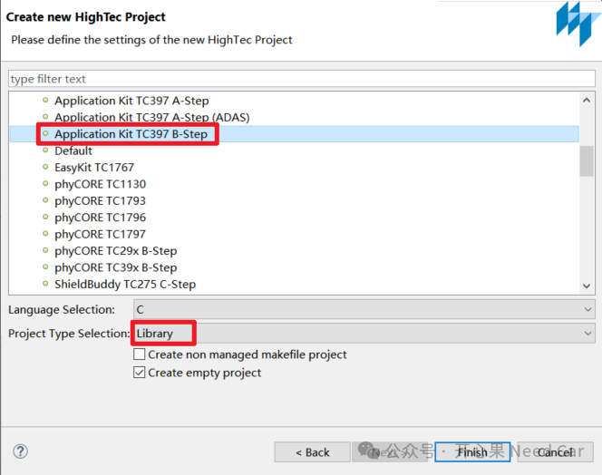
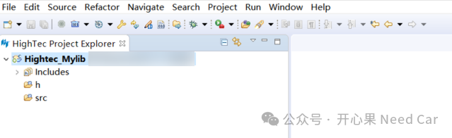
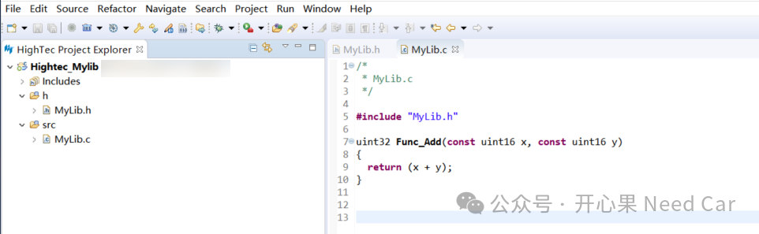
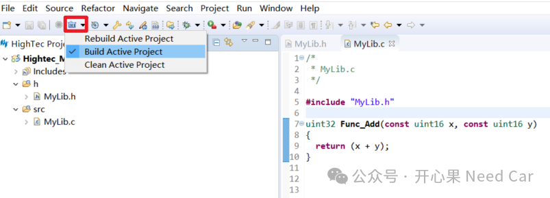
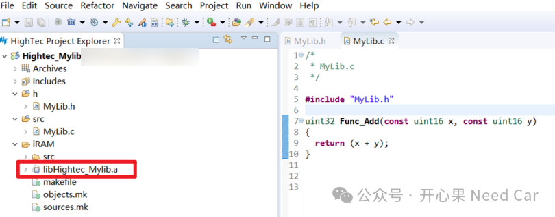
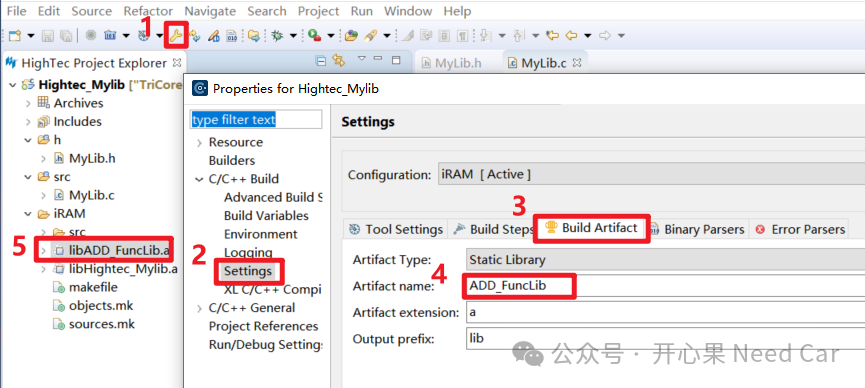

开心果 Need Car · 2024-02-26T08:42:00+08:00 · 微信原文
工程开发中，常常将一些需要保密的算法封装成库文件（eg：*.a）给到第三方，以便于工程集成。其实，将源文件封装库，不仅仅有保护算法的作用，库文件本身就是预编译好的代码，因此，可以直接链接，进而节省编译时间。如果算法是成熟可复用的程序，封装成库是比较理想的一种模块化方式。前文《如何基于HighTec将源文件（*.c）打包成静态库文件（*.a）》讨论过如何将源程序封装成静态库（*.a），本文继续输出，给出第二种生成静态库的方式：创建库文件（library）工程方式生成静态库。
1、创建lib工程
具体操作步骤如下：
（一）新建Hightec工程
打开Hightec以后，右击空白位置->New->Hightec Project，如下所示：


（三）选择工程类型为Library
在弹出的界面中，选择芯片类型、工程类型（此处选择Library）、语言类型（eg：C语言），如下所示：

Library工程创建完成，如下所示：

2、源码编写
/** MyLib.h*/typedef unsigned short uint16;typedef unsigned long uint32;extern uint32 Func_Add(const uint16 x, const uint16 y);
MyLib.c内容如下所示：
/** MyLib.c*/uint32 Func_Add(const uint16 x, const uint16 y){return (x + y);}
3、编译*.a静态库
将需要封装成静态库文件的源文件加载到工程中，如下所示：


编译生成的静态库文件（libHightec_Mylib.a）如下所示：


往期精彩回顾
工程思考：ECC纠错对完整性校验的影响
从CAN Transceiver角度，理解两帧网络管理报文唤醒网络的原理
Bootloader开发：刷写时，被刷节点和非刷写节点行为有何不同？